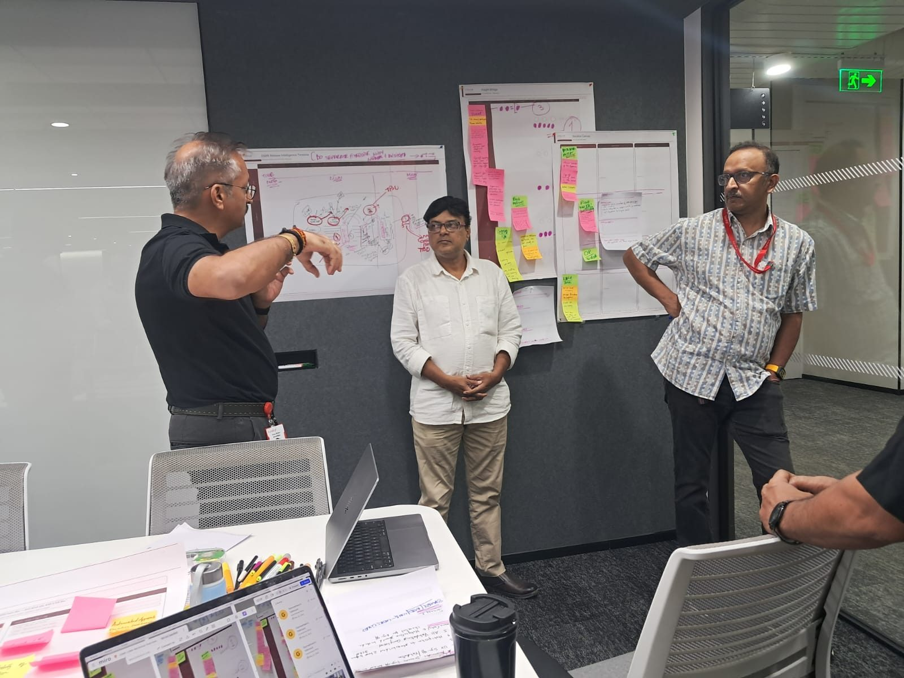
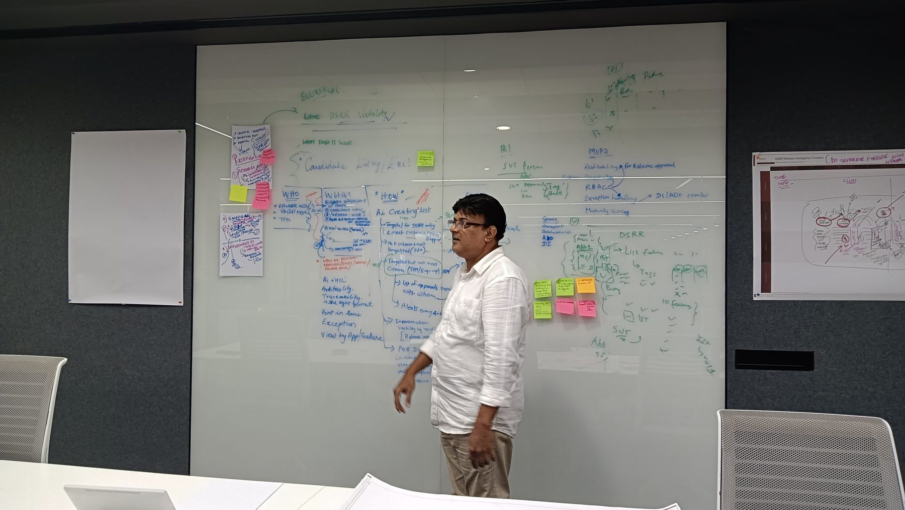
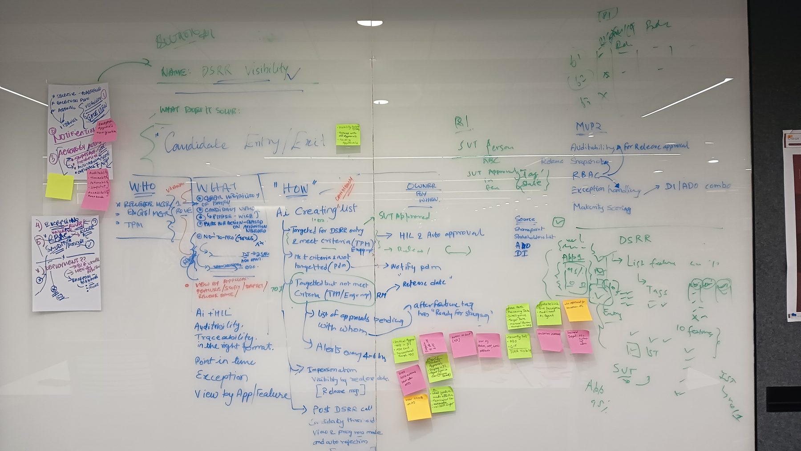
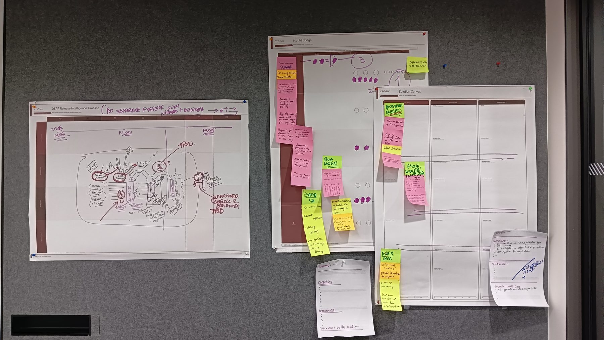
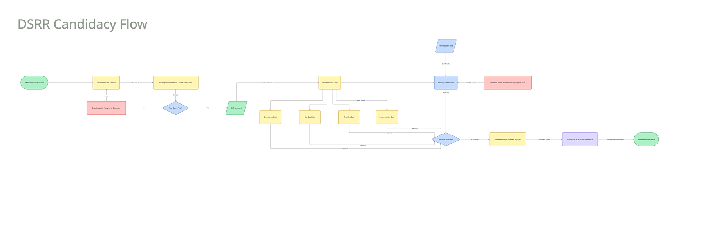
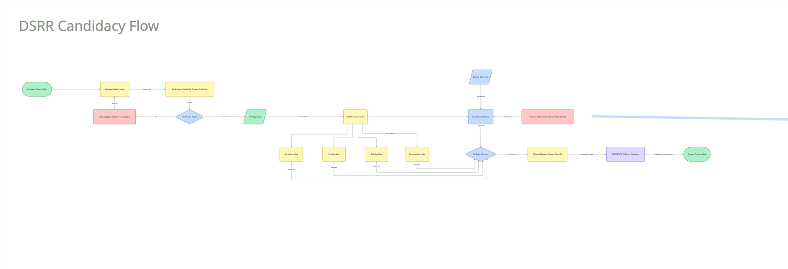
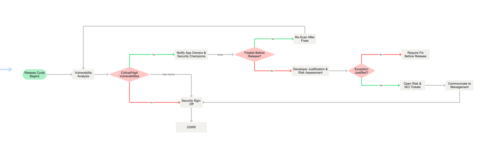
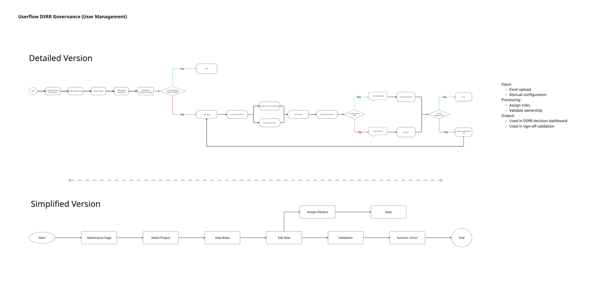
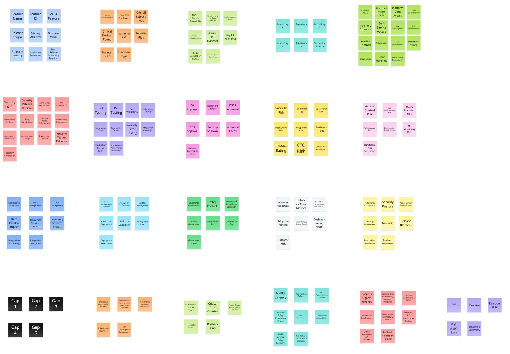
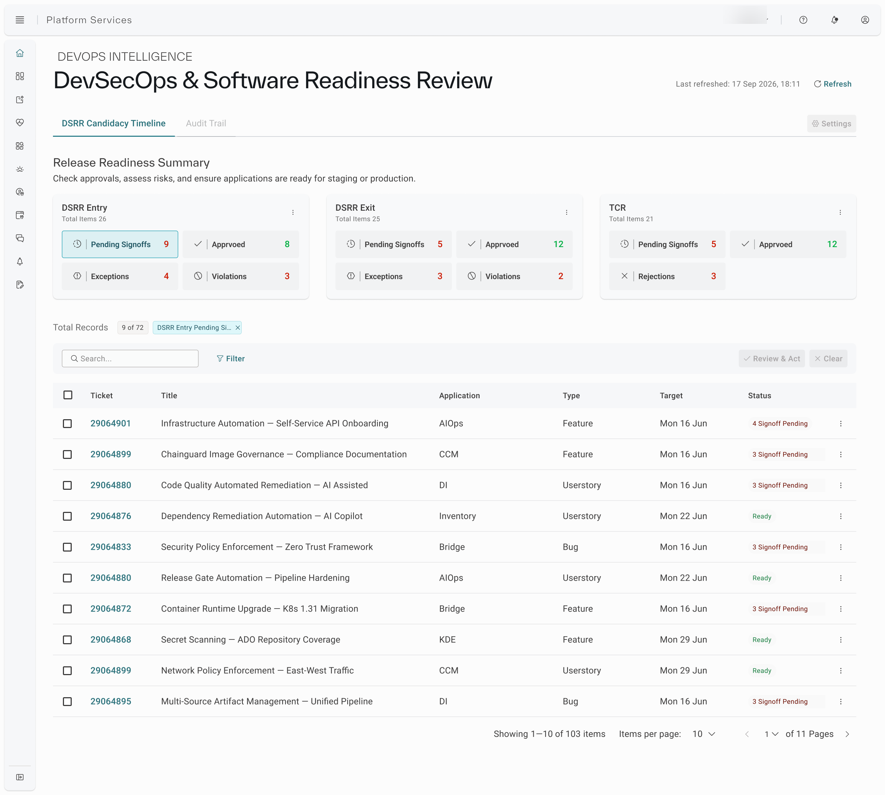

An AI-assisted release-readiness and candidacy system for enterprise DevSecOps — turning a scattered, manual sign-off chase across chat threads and spreadsheets into one governed decision flow people could see, trust, and act on.
Kyndryl's release engineering teams were making go/no-go readiness calls using signals spread across multiple tools, spreadsheets, and Teams threads, with no single, governed view of what "ready" actually meant or who had signed off on what. The business context was DevSecOps at enterprise scale, where a missed or late security sign-off has real downstream cost.
The users were release managers, DevOps and TechOps leads, and the security sign-off SME who had to make a defensible decision quickly, not dig for it across systems. The ask: design an AI-assisted candidacy and readiness flow — Digital Solution Release Readiness (DSRR) — that made every gate, every approval, and every exception visible in one place.
UX lead for DSRR Visibility, end to end — from the first whiteboard to the shipped candidacy flow.
I owned the project from problem framing through shipped UX — the person responsible for turning a fragmented, manual sign-off chase into a system a release manager could stand behind in a review, and that a security SME could trust enough to hand off approval authority to.
The project started on a whiteboard, not in Figma. I ran a series of solutioning workshops named "DSRR Visibility" with release management, DevOps, TechOps, and security stakeholders in the room, working through what the system needed to solve before sketching a single screen.
We framed the problem using a WHO / WHAT / HOW structure — who needs visibility (release managers, engineering managers, TPMs), what they need visibility of (candidate entry and exit, sign-off status, exceptions), and how the system should behave (an AI-assisted candidate list with human-in-the-loop approval and auto-approval only where trust had been earned). Role-based access, exception handling, and a maturity-scoring model for candidates came out of these same sessions.




The workshops surfaced a clear, recurring pattern once the pain points were sorted: sign-off was manual and interpretive — approvals arrived in a team chat rather than a system of record. It was labour-intensive — someone had to chase four separate gates and a security sign-off by hand for every release candidate. And it was inconsistent — different people applying the same criteria differently, with no shared definition of "ready," and exception handling that nobody could point to a defined process for.
On top of that, trust was the harder problem than layout. Once we introduced AI-assisted candidacy scoring, release managers were effectively being asked to rely on a system-generated signal for decisions that carried real consequences — and different stakeholder groups needed to read that signal differently: engineering wanted the technical detail behind a flag, release leadership wanted a clear, defensible call. The flow had to serve both without becoming two different products.
Before designing the dashboard, I mapped the actual candidacy flow end to end — from a feature marked ready for dev through to a release decision — so the interface could reflect a process people already recognized, rather than inventing a new one on top of it. The flow moves through build and QA validation, into DSRR entry, through four gates running in parallel (Compliance, DevOps, TechOps, Documentation), into security gate review, and finally to release manager sign-off with AI-driven assistance surfacing the consolidated view.




The security sub-flow mattered more than it looks like it should on paper. Critical or high vulnerabilities don't just block a release outright — they route to app owners and security champions for assessment, and if a fix genuinely can't land before release, there's a defined exception path: developer justification, risk assessment, and if justified, a tracked risk ticket with a required communication to management rather than a silent override. Designing the dashboard meant making that branching status legible at a glance, not just "blocked" or "clear."
Governance was the quieter but equally load-bearing piece: someone has to own which roles are authorized to approve which gates, and that ownership data — configured via Excel upload or manual entry, validated, and versioned — is what the candidacy dashboard and sign-off validation actually run on. Without a governed source of role and ownership data, an "AI-assisted" approval view is just a faster way to trust the wrong person.
Once the process was mapped, the harder synthesis work was defining what a "candidate" actually needed to carry — every attribute a release manager, a security SME, or an engineering lead might need to see before they'd trust a decision. I ran this as a structured synthesis exercise across feature metadata, release risk, GitHub traceability, testing evidence, security sign-off, governance, and outcome metrics, grouping roughly two dozen categories into the information architecture the dashboard is actually built on.

Two groupings from this exercise shaped the dashboard directly. First, risk had to be decomposed rather than shown as one number — security risk, functional risk, operational risk, deployment risk, and business risk each needed their own visibility, rolling up into an overall risk assessment and impact rating a release manager could interrogate rather than just accept. Second, "gaps" and "residual risk" needed to be first-class states in the model, not an afterthought — a release recommendation that hides what it doesn't know isn't one people will trust.
With the flow validated and the data model synthesized, the process moved into low-fidelity wireframes and clickable prototypes in Figma — structural layout, information hierarchy, and interaction logic first, visual design second. That wireframing stage lived in Figma working files rather than as standalone exportable artifacts, so it isn't pictured here as its own step — but it's the direct link between the process maps above and the shipped screen below.

Whiteboards and workshop posters first. Process maps validated with every gate owner. Prototypes in Figma. Feedback loops with product, engineering, and security before any pixel was called final.
The shift that mattered: release readiness moved from "who has approved this, and where is the proof" being a manual chase, to a shared, governed view that release leadership, engineering, and security were all willing to stand behind — with the exceptions and residual risk visible, not buried.
I'd bring the explainability of the AI-assisted candidate list into the brief from day one. A lot of the trust problem could have been designed for earlier if "why is this candidate flagged" had been part of the original WHO / WHAT / HOW framing, rather than something we strengthened after early sessions surfaced confusion about auto-approval versus human-in-the-loop review.
I'd also push for a dedicated comprehension study on the decomposed risk view before launch. We validated the dashboard as a whole and validated the process maps with each gate owner, but in hindsight the riskiest single element — whether people correctly read the difference between "blocked," "exception granted," and "residual risk accepted" — deserved its own focused round rather than being folded into general usability testing.
Whiteboards before wireframes. Workshops before decks. The rhythm was discovery and process mapping up front — with the people who actually own each gate in the room — then a tight loop of synthesis, prototype, and validation before anything went to engineering.
Weekly reviews with product and release leadership kept the direction honest; working sessions with DevOps, TechOps, and the security sign-off SME kept the process maps accurate and the handoff realistic. Enterprise UX practice applied to a governance problem as much as an interface one.
A designer who ships. Interfaces that hold up after the pixels are pushed.
← All work